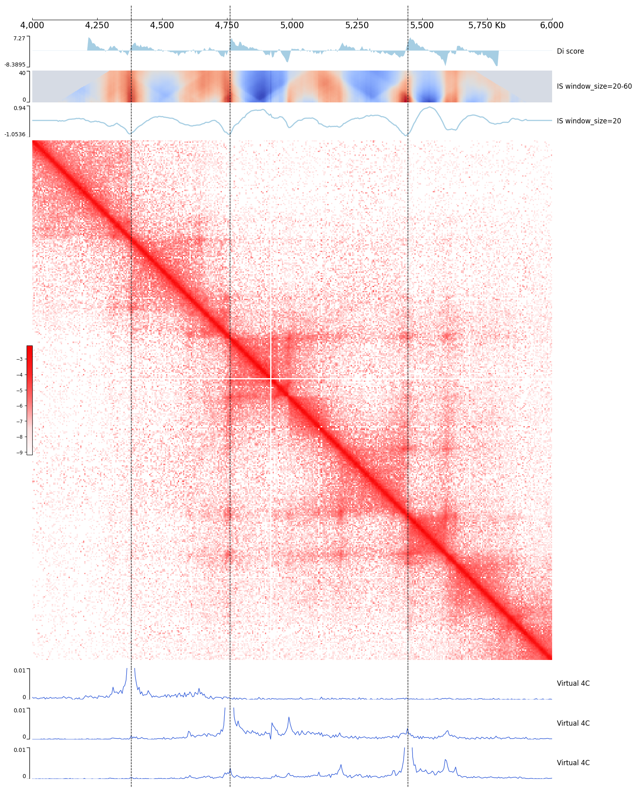

Hi-C features like Virtual4C, DiScore, InsuScore
Virual4C track is for mimic 4C data track from Hi-C contact matrix.
DiScore and InsuScore represents the interaction bias between TAD and non-TAD regions.
[1]:
import coolbox
from coolbox.api import *
[2]:
coolbox.__version__
[2]:
'0.4.0'
[3]:
example_cool = "../../../tests/test_data/cool_chr9_4000000_6000000.mcool"
test_region = "chr9:4000000-6000000"
cool_track = Cool(example_cool, style="matrix")
loci = ["chr9:4380000-4380000", "chr9:4760000-4760000", "chr9:5445000-5445000"]
frame = XAxis() \
+ DiScore(cool_track) + Title("Di score") + Spacer(0.2) \
+ InsuScore(cool_track, window_size="20-60", style="heatmap") + Title("IS window_size=20-60") + Spacer(0.2) \
+ InsuScore(cool_track) + Title("IS window_size=20") + Spacer(0.2) \
+ cool_track + Spacer(0.5)
for l in loci:
track = Virtual4C(cool_track, l, bin_width=5) + MinValue(0) + Title("Virtual 4C")
track += MaxValue(0.015)
frame += track + Spacer(0.5)
frame *= Vlines(loci)
frame.plot(test_region)
[3]:

CLI code
[4]:
%%bash
cool_file=../../../tests/test_data/cool_chr9_4000000_6000000.mcool
loci1="chr9:4380000-4380000"
loci2="chr9:4760000-4760000"
loci3="chr9:5445000-5445000"
coolbox add XAxis - \
add DiScore ${cool_file} - \
add InsuScore ${cool_file} --window_size 20-60 --style heatmap - \
add InsuScore ${cool_file} - \
start_with Vlines "['${loci1}', '${loci2}', '${loci3}']" - \
add Cool ${cool_file} --style "matrix" - \
start_with MaxValue "0.015" - \
start_with MinValue "0" - \
add Virtual4C ${cool_file} "${loci1}" --bin_width 5 - \
add Virtual4C ${cool_file} "${loci2}" --bin_width 5 - \
add Virtual4C ${cool_file} "${loci3}" --bin_width 5 - \
goto "chr9:4000000-6000000" - \
plot /tmp/test_cli_hicfeature.png